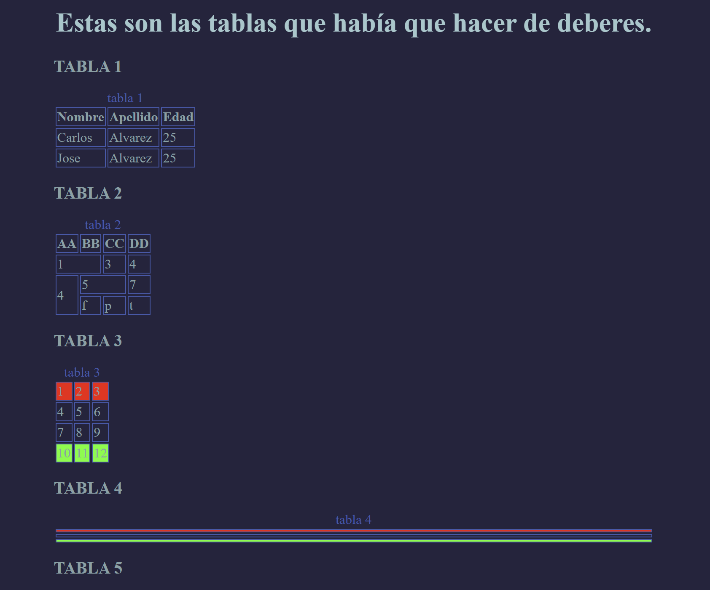

TOP 5: Imágenes nunca vistas de nuestro planeta
Cuando entres en esta página, podras decidir si vuelves a creer en la magia, o en la existencia de otros mundos más allá de lo que vemos a simple vista.

Tu decides que planeta visitaras primero
Ingresa. Toma la desición de visitar tres diferentes mundos, en donde pordrás elejir entre diferentes caminos... y llegar a salvar o destruir el mundo.

Las tablas: diferentes formatos de organizar tu información
Aquí podras seleccionar la tabla que mejor se adapte a tus necesidades, o combinarlas para crear un nuevo sistema de datos.
¿Sos goloso? ¿Te gusta cocinar diferente clases de platos?
Este sitio te premite satisfacer cualquier deseo culinario que tengas. Y como regalo, una pagina de Cocktails para acompañarlo.

Te gusta leer, entonces no dejes de hacer esta encuesta
Hola, estamos juntando datos para crear una biblioteca virtual en donde encontras, diferentes generos de libros, seleccionados especialmente para vos.